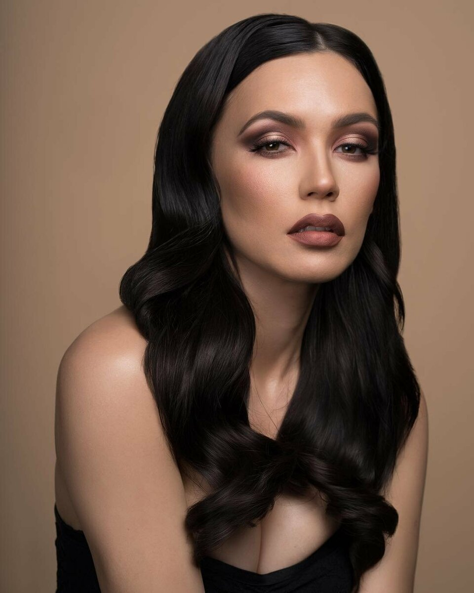
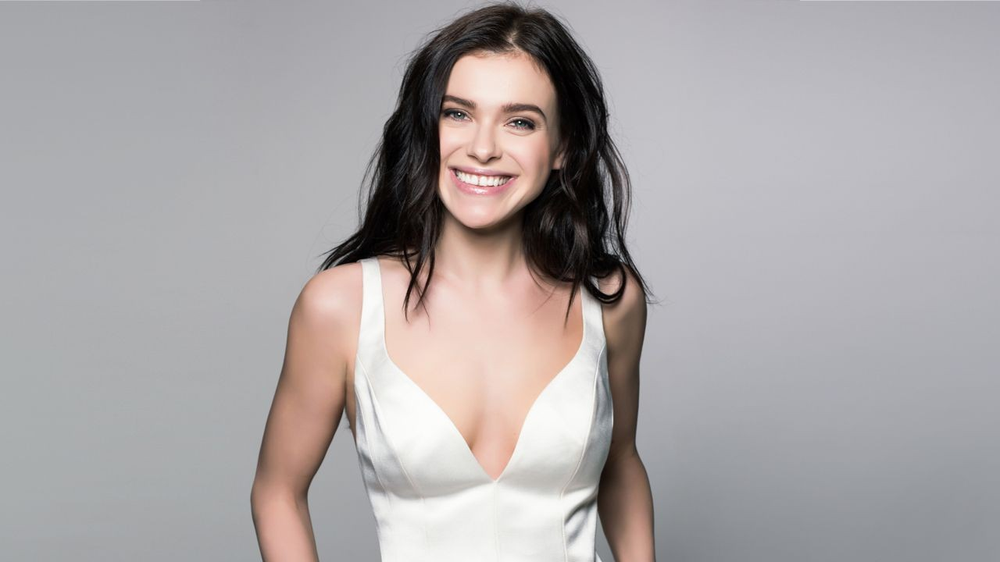
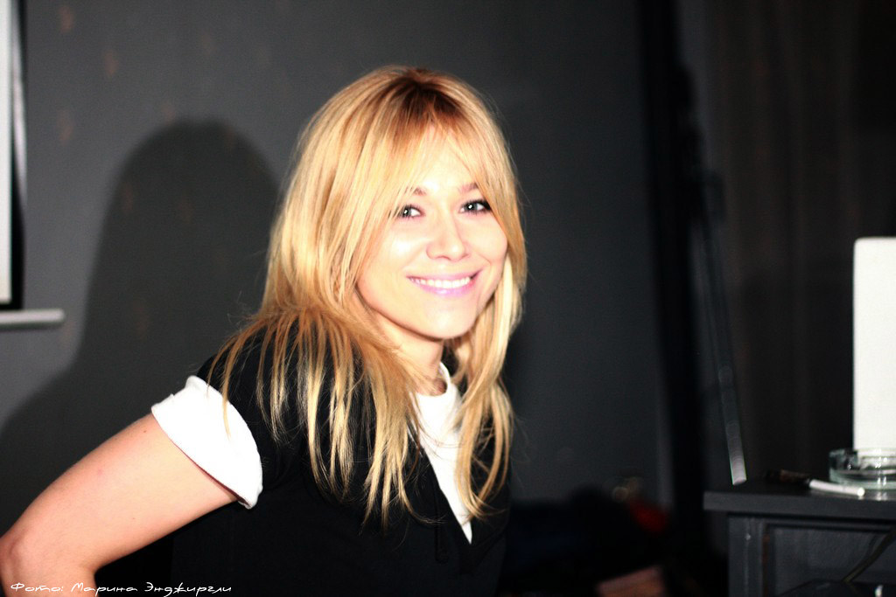
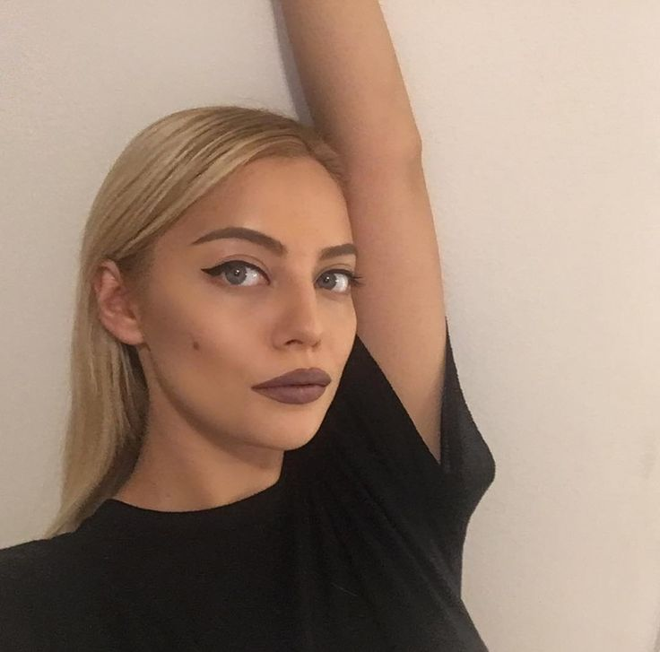
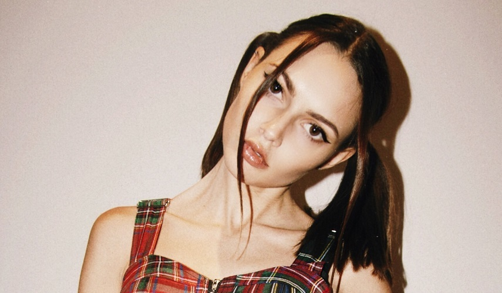
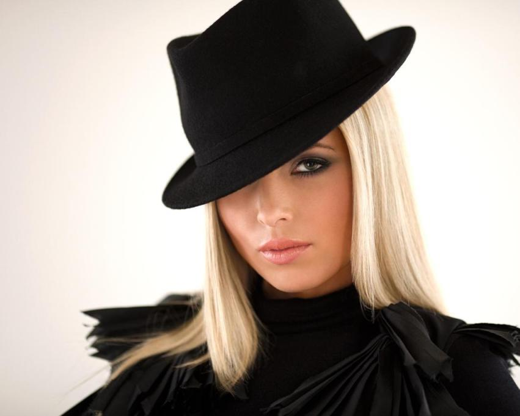

1. Ольга Серябкина (Molly)
Ольга Серябкина
Российская певица, автор песен, поэтесса, актриса и телеведущая.
2. Елена Темникова
Елена Темникова
Российская певица и автор песен. Бывшая участница группы Serebro.
3. Марина Лизоркина
 Марина Лизоркина
Российский художник и певица. Бывшая солистка группы Serebro.
Также в разное время в составе группы были:
 Катя Кищук  Полина Фаворская Дарья Шашина  Анастасия Карпова 4.Катя Кищук
Российская певица, блогер, автор песен и бывшая участница группы «SEREBRO».
5. Полина Фаворская
Музыкант, dj, блогер, бывшая солистка группы SEREBRO
6. Дарья Шашина
7. Анастасия Карпова
Российская певица, известная как участница группы Serebro.
После распала группы в 2019 году, некоторые девочки начали строить сольную карьеру.